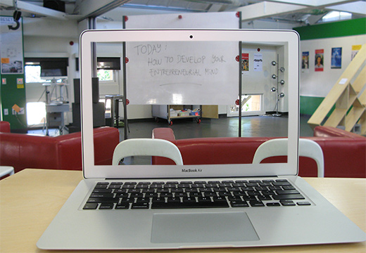

Research by Julia Cambre, Stanford University
March 15, 2014
With the Massive Open Online Course movement gaining momentum on several different platforms, there are plenty of courses to keep those with an interest in entrepreneurship busy with a full course load this fall. We’ve rounded up the details on free, public entrepreneurship courses currently available online.
General Interest
Technology Entrepreneurship 2
Chuck Eesley, Stanford University
Platform: Venture Lab
Timing: Students are free to watch video lectures and complete quizzes at their own pace, but assignments and group projects must be completed synchronously.
A Crash Course on Creativity
Tina Seelig, Stanford University
venture-lab.stanford.edu/creativity
Platform:Venture Lab
How to Build a Startup
Steve Blank
Platform: Udacity
Timing: Asynchronous
Entrepreneurship in Specific Fields
Healthcare Innovation and Entrepreneurship
Bob Barnes and Marilyn M. Lombardi, Duke University
www.coursera.org/course/healthcareinnovation
Platform: Coursera
About the Classes
General Interest and Introductory Courses
Whether or not you have a background in entrepreneurship or a startup idea in mind, four courses open to participants of all educational backgrounds and experience levels provide an introduction to the entrepreneurial process. Two of these courses, Technology Entrepreneurship and A Crash Course on Creativity will be offered through Stanford University’s Venture Lab platform, an online course delivery system developed to promote team interaction. Courses offered through Venture Lab will be largely team-focused and project based, emphasizing experiential and collaborative learning as a means of applying course content in a supportive environment. A Crash Course on Creativity, taught by Tina Seelig, Executive Director of Stanford Technology Ventures Program, will use weekly challenges as a means of helping participants to unleash their creative problem solving skills for individuals, teams, and organizations. In Chuck Eesley’s Technology Entrepreneurship class, participants will form teams and work together on a startup project. By the end of the course, teams that create the most successful venture by the end of the class will have the opportunity to pitch their ideas to Silicon Valley mentors and investors.
For those learners looking for more independent and self-paced courses, serial entrepreneur and author of The Startup Owner’s Manual Steve Blank is offering a video lecture-based course called How to Launch a Startup through Udacity. According to the Udacity website, participants will “learn the key steps of the Customer Development process: how to identify and engage the first customers for your product, and how to gather, evaluate and use their feedback to make your product, marketing and business model far stronger.” In addition to How to Launch a Startup, Blank also appears alongside Scott Cook, Ash Maurya, Todd Park, and Lean Startup author Eric Ries in “Build. Measure. Learn. Lean Startup SXSW 2012.,” a free Udemy course offering six hours of recorded video from the SXSW Interactive Lean Startup event.
Advanced Entrepreneurship
For participants with a stronger background in entrepreneurship, Clint Kolver will be teaching Startup Boards: Advanced Entrepreneurship on the Venture Labs platform beginning October 15. Participants are highly encouraged to join the class as an established team with a ready idea for a startup in mind. Teams participating in the course will learn how to create and effectively manage boards in a startup through a series of projects.
Entrepreneurship MOOCs by Specific Fields
Once you’ve mastered the basics of entrepreneurship, there are online courses available to help you move on to apply those skills to more specific fields.
For those looking to develop an education-related business, Ed Startup 101 offers a community of entrepreneurs and a panelist of experts from education organizations to participants exploring of the education startup space. Unlike many of the other MOOCs included in the roundup, Ed Startup 101 focuses more on personal reflection, discussion, and community building than on lecture content. Course moderators provide prompts to guide participants in weekly discussion topics, but each student is responsible for generating his or her own response through a personal blog.
Also for the “edu-preneurs,” Designing a New Learning Environment will tackle the questions surrounding education at a more systemic level. In what seems to be more of a social-entrepreneurship focused class, students will work in teams to reimagine the school model to better suit the needs of 21st century teaching and learning. The course will be offered on Venture Lab by Stanford University School of Education CTO Daniel Kim.
In addition to the courses in educational entrepreneurship, Duke University and Coursera recently announced that they will be offering a course on Healthcare Innovation and Entrepreneurship. Although a start date has not yet been stated, the course homepage invites both healthcare professionals and entrepreneurs with no background in the health industry to take part in the class.
Supplementary Classes
If the above courses aren’t enough to keep you busy, here are a few “electives” to add to your online learning schedule:
• Grow to Greatness: Smart Growth for Private Businesses, Parts I & II
Learn what to do once your startup gets off the ground. This course will introduce students to the best practices in promoting and maintaining growth and value in existing private businesses.
• Introduction to Human-Computer Interaction
Participants will come away from the class with an understanding of human-centered design principles, and will be familiarized with techniques for rapid prototyping and interface evaluation
For additional free online resources on entrepreneurship, be sure to explore:
• Stanford ECorner
• MIT OpenCourseWare Entrepreneurship
• iTunes U, Entrepreneurship Collection
About Julia: Julia Cambre is a junior majoring in Symbolic Systems at Stanford University. She is passionate about education and education entrepreneurship, and teaches at Stanford University Online High School and the Lucile Packard Children's Hospital School.